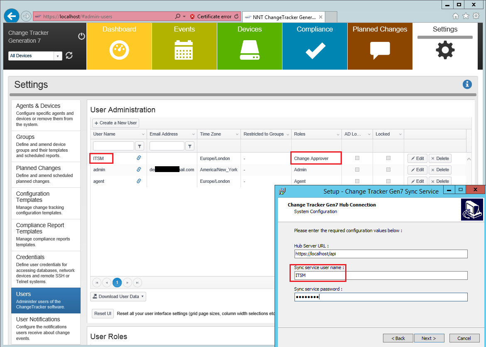
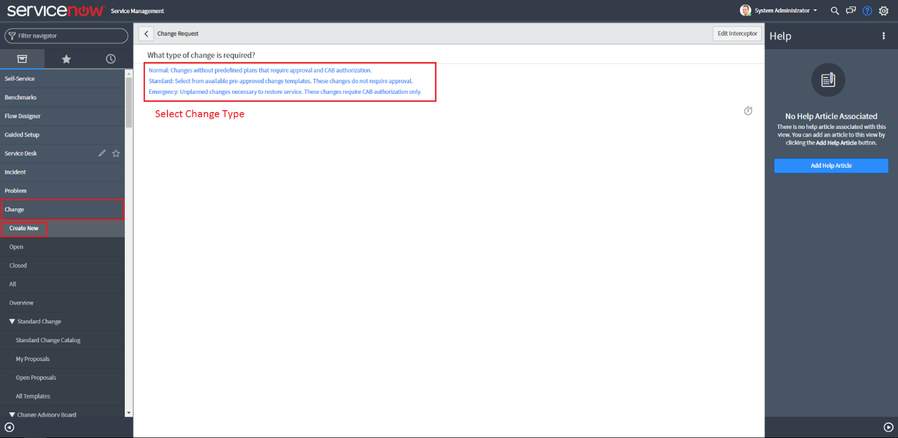

Question
How can I integrate the ServiceNow Instance with my Change Tracker Environment? What are steps for testing ServiceNow Integration with Change Tracker?
Answer
- Once the ServiceNow / Change Tracker Integration has been purchased, please contact Netwrix Technical Support to receive the latest version of the Integration Install Module.
- Make sure you are updated to the latest version of Netwrix Change Tracker. To download the latest version, go here.
- Proceed to installing ServiceNow Integration
-
Follow the screenshots below
-
Select the Service Now Check Box and unselect other options:
-
In Change Tracker, create a Change Approver User and enter
new Change Tracker user's Credentials into the Service Now Installer:
 - If you have entered the information correctly, you will see the following popup message: Successfully connected using these details. Click OK.
-
Enter the URL for your Service Now instance below, Please follow the same format
as the screenshot below. Once that is complete, also enter your Service Now Username and Password (from ServiceNow, not Change Tracker):
-
For adding devices to your ServiceNow CMDBs, first go to Configuration and select
your CMDB Group. Then click New and create a new device:

-
Input the Exact name of the Server and proper
Configuration information. Click Submit
Once the Device has been created, you will see the device in the group. -
Change the Service Now Configuration File: proceed to
C:\Program Files\NNT Change Tracker Suite\Gen7SyncServiceand select the Gen7SyncService.exe.Config file:
-
Once opened, navigate to the following line:
<add key = "service.Now.groupClassNames" value=" " />. Enter Group Class information based on your ServiceNow Instance. This will include your CMDB and CI groups from ServiceNow. In the example below, you may find default Windows and Linux values:
-
Go to the ServiceNow and
create a New Change Request:
 -
Proceed to create the Planned Change by entering the proper Information. Configuration Item
can either be the Group or Device, Assignment Group, Short Description. This will be set as the Planned Change name in Change Tracker
-
Check if the Planned Change has been created in Change Tracker. First, head over
to the Planned Changes tab and click the Show Out-Of-Schedule Changes. Then, you should see your Implemented Planned Change from ServiceNow
with the proper Description, Device, and Planned Change Start/End Time